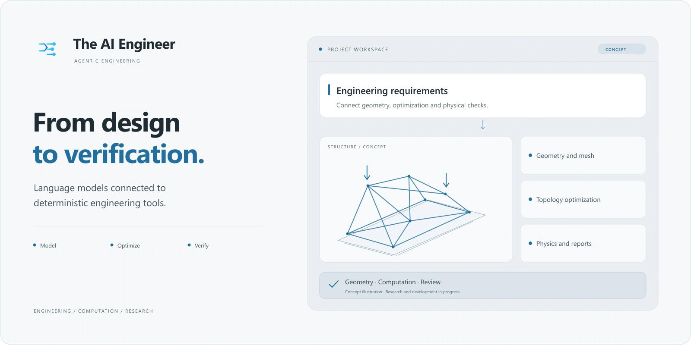
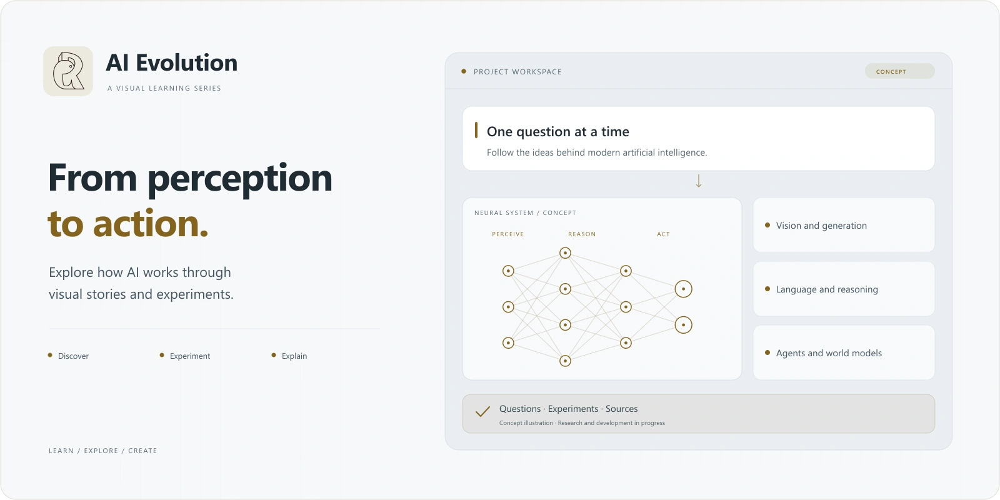
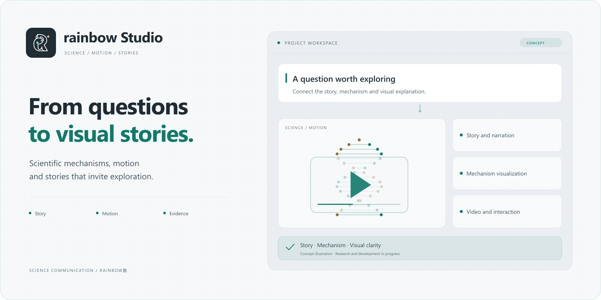
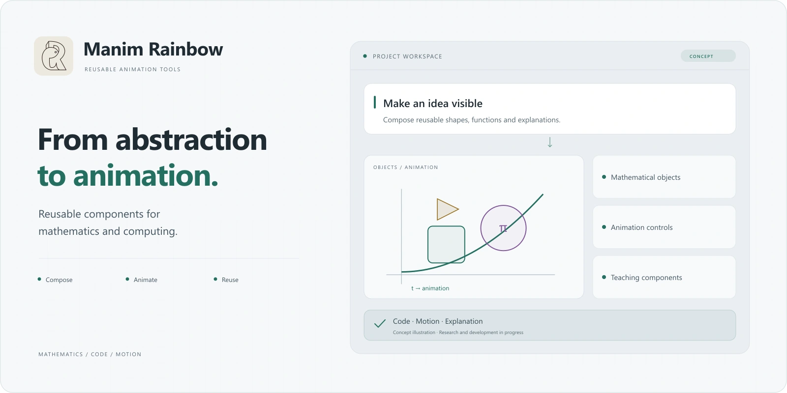
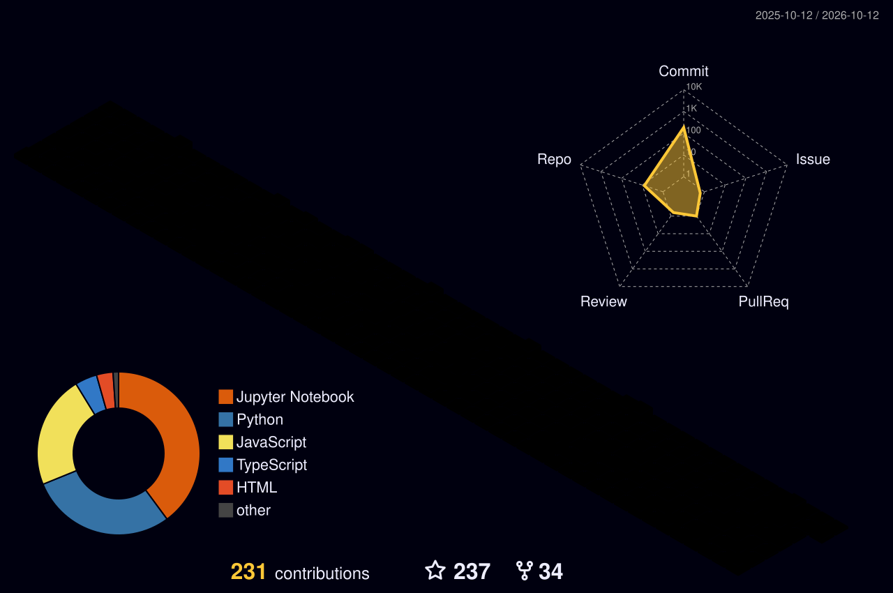

PhysCast
从稀疏观测出发，探索有物理依据的风场预测。
源码私有
项目介绍
持续研究 · 源码私有
围绕控制干预后的风场响应，将物理仿真、生成式预测与独立验证连接起来。关注模型在什么条件下可靠、何时应表达不确定性。
- 观测
- 约束
- 预测
- 验证
ZJU 浙江大学博士
CHINA · UTC +08:00
各自独立，又彼此连接。
关于物理、工程，以及知识的表达。
从稀疏观测出发，探索有物理依据的风场预测。
持续研究 · 源码私有
围绕控制干预后的风场响应，将物理仿真、生成式预测与独立验证连接起来。关注模型在什么条件下可靠、何时应表达不确定性。
把工程意图转化为可以检查、迭代和交付的工作。
开发中 · 源码私有
围绕建模、计算与验证组织自适应智能体和工程工具。把输入、执行轨迹、结果与报告串在一起，让工程过程保留证据，让经验能够复用。

连接几何、网格、拓扑优化与物理计算。
研究代码 · 开源
探索从自然语言需求到设计交付的工程流程。把几何处理、有限元计算和优化任务组织起来，以过程记录和计算结果支持设计判断。

沿着视觉、生成模型与智能体，理解 AI 如何演进。
系列创作 · 开源
以六章路线组织动态演示、视觉叙事与可复现实验，让算法不只停留在名词上。前五章资料已整理，后续内容继续推进。

把问题变成故事，把科学机制变成画面。
持续构建 · 开源
组织科学影像、AI 视频编辑、分镜与动画组件。让选题、材料、画面和制作过程能够协作，让复杂知识有清晰、可信的表达。

把反复打磨的数学动画，沉淀为可复用工具。
动画扩展 · 开源
为数学和科普创作整理 Manim 扩展、动画组件与示例。让抽象关系拥有直观的运动，让制作经验成为下一次创作的起点。
代码、创作与持续探索的轨迹。
贡献、公开活动与每日更新的记录。

卡片暂不可用，等待下一次更新。

卡片暂不可用，等待下一次更新。

卡片暂不可用，等待下一次更新。

卡片暂不可用，等待下一次更新。

卡片暂不可用，等待下一次更新。

卡片暂不可用，等待下一次更新。

卡片暂不可用，等待下一次更新。

卡片暂不可用，等待下一次更新。

卡片暂不可用，等待下一次更新。
基于最近 7 天的真实编码记录，具体时间以卡片及更新状态为准；更新失败时保留最近一次快照。
保留旧版卡片作为历史快照。它们可能较旧，或显示当时的数据源错误；不代表实时状态。
旧里程碑卡片的数据源曾报错，原文件留存于仓库档案。
卡片暂不可用，等待下一次更新。
卡片暂不可用，等待下一次更新。
卡片暂不可用，等待下一次更新。

卡片暂不可用，等待下一次更新。
卡片暂不可用，等待下一次更新。
卡片暂不可用，等待下一次更新。
卡片暂不可用，等待下一次更新。
卡片暂不可用，等待下一次更新。
动效开关同时控制首页视觉、贡献动画；系统减少动态效果偏好会自动生效。
我是 rainbow鱼，浙江大学博士。
我在 AI、物理仿真与工程之间探索，也把复杂的知识做成可视、可交互的作品。从一个研究问题出发，一直走到可以运行、可以验证、可以分享的东西。
关于研究、工程工具、科学可视化，或一个值得动手的想法。
在 GitHub 找到我